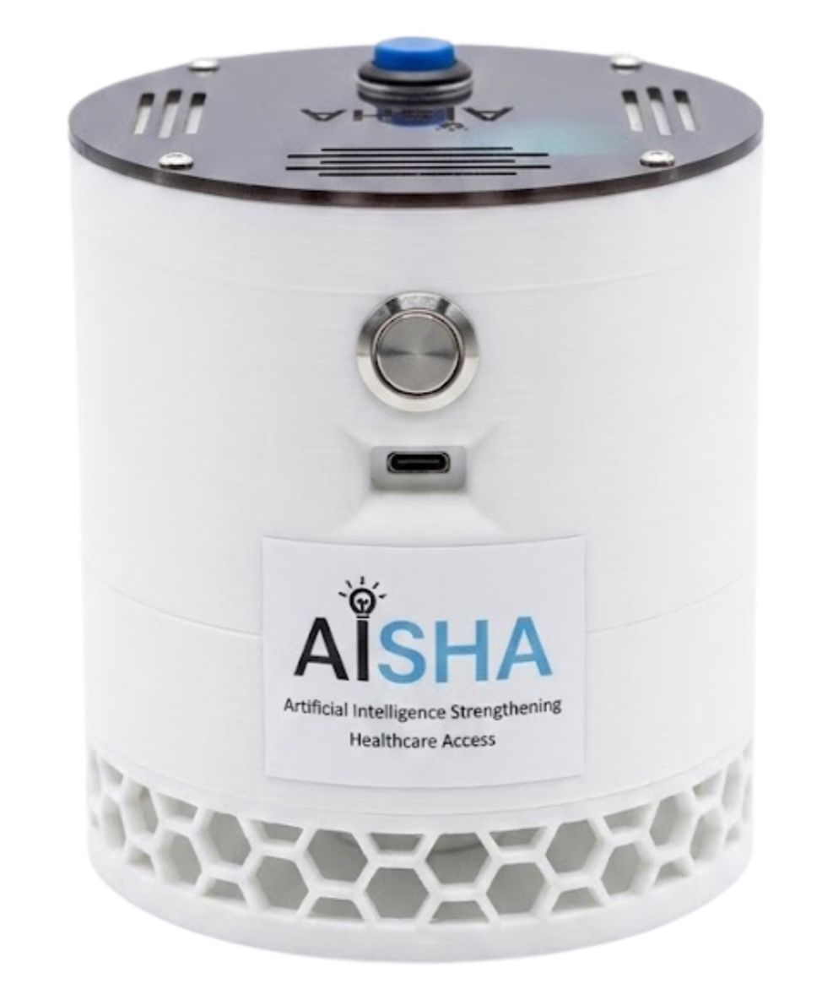
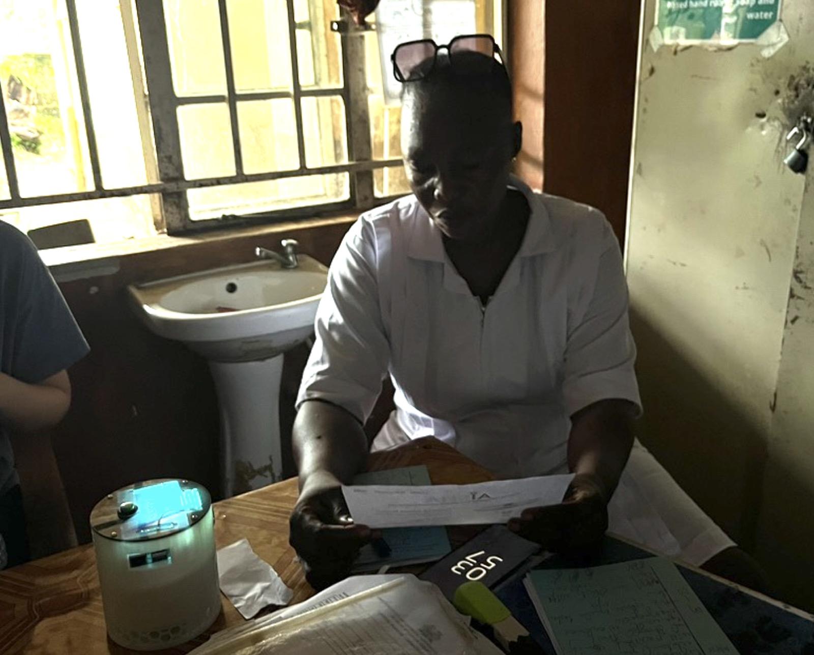
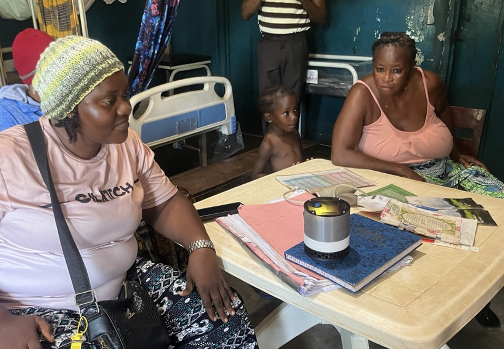
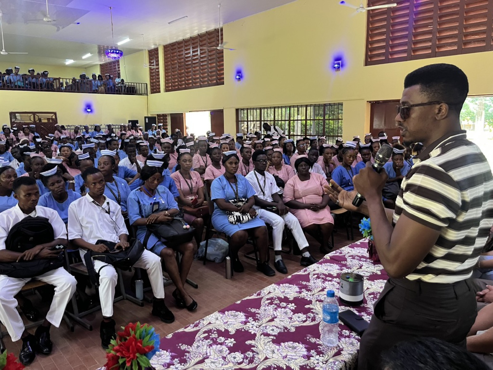
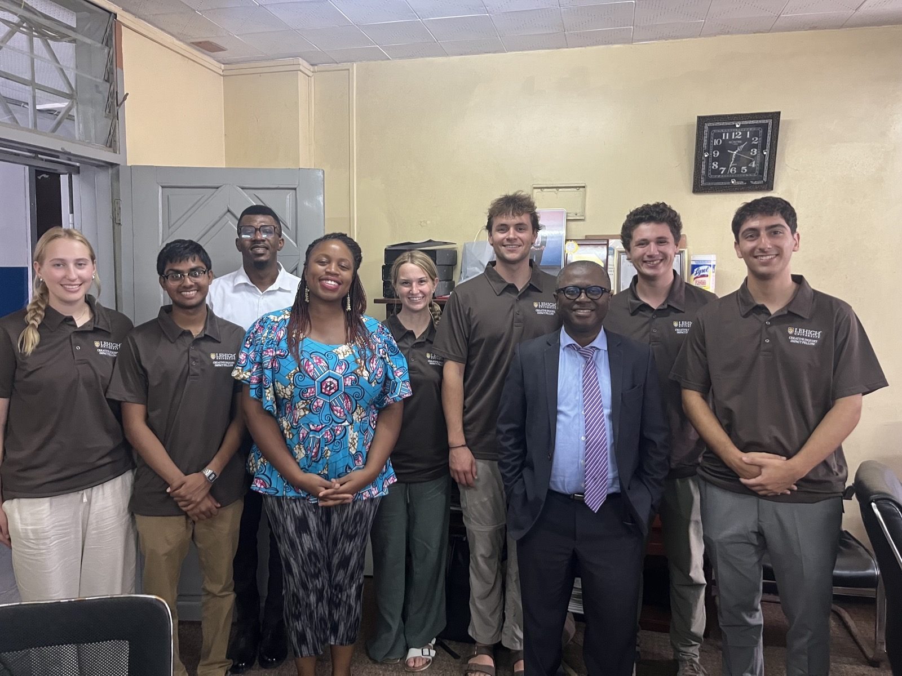
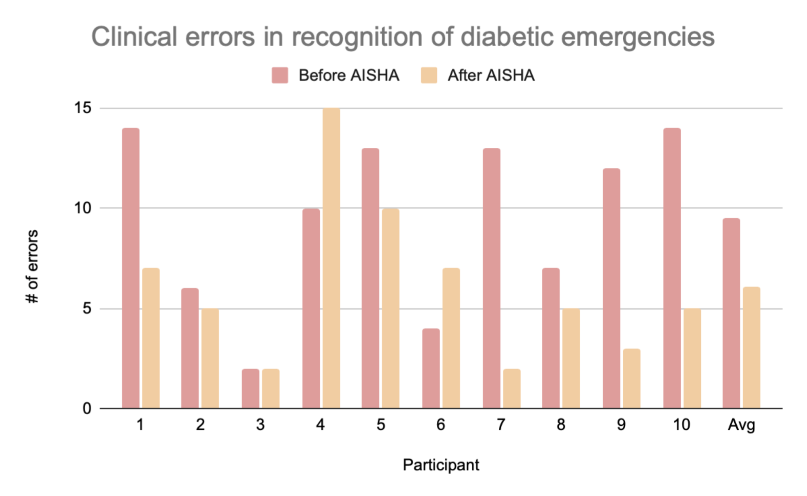
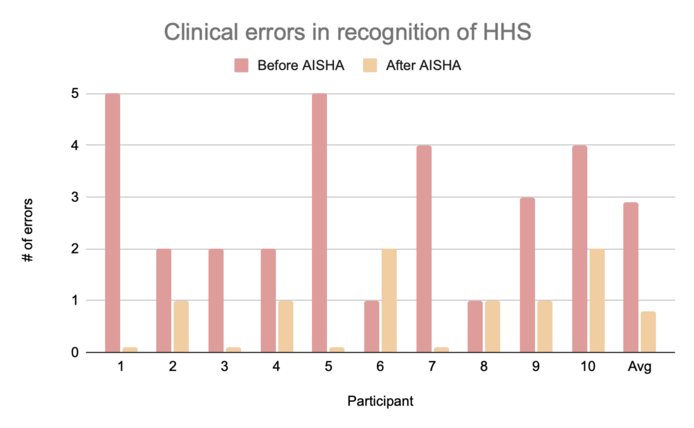
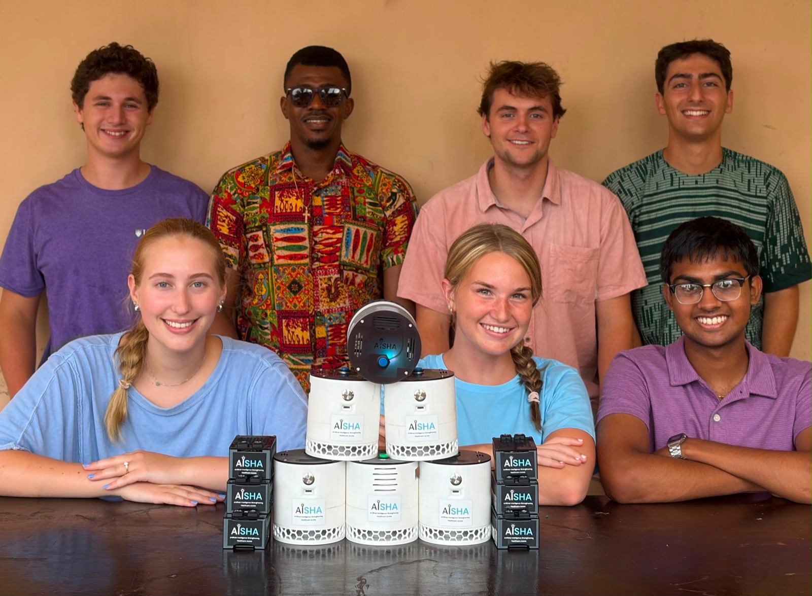

AISHA answers clinical questions out loud, in Krio, from a medical library stored entirely on the device. It needs no internet and no grid power, and it is built with health workers in rural Sierra Leone.

Most frontline care in Sierra Leone happens at small rural facilities. Clinical guidelines exist for nearly every case these health workers see, but they are written in English, scattered across binders and PDFs, and hard to search in the middle of a shift. AISHA puts that guidance one spoken question away.
Watch a demo
AISHA is a retrieval system. It matches each question against a curated library of clinical references stored on the device and reads back the relevant guidance. Nothing is improvised and nothing leaves the room.
A clinical question, asked in Krio
The guidance, read aloud
A full day on its internal battery and zero reliance on connectivity. AISHA works the same in a regional hospital and a village health post.
English guidelines, Krio conversations. AISHA bridges the two with speech models trained on Krio recorded across Sierra Leone.
The library is assembled with the Ministry of Health and partner facilities, adapting their protocols and standard operating procedures into a form that can be searched by voice.
Eight AISHA devices have been running in hospitals and Peripheral Health Units around Makeni since August 2025, in partnership with Sierra Leone’s Ministry of Health and Sanitation.



In November 2025 we ran a pre/post evaluation with ten healthcare workers at pilot sites. Each worked through realistic patient scenarios before and after a short AISHA learning module. Errors fell 35 percent on average, and 80 percent for recognition of hyperosmolar hyperglycemic state, a dangerous diabetic emergency that few had been formally trained on. It is an early result from a small group, and the evaluation continues as more devices go out.


Errors per participant on scenario tests, before and after using AISHA. November 2025, n = 10.
Krio has almost no public speech data, so we are building the dataset ourselves. Contributors across Sierra Leone record phrases through a WhatsApp platform we built, and native speakers review the transcriptions for accuracy. This data trains the recognition models that let AISHA understand questions the way people actually ask them.
AISHA is developed by an interdisciplinary student team at Lehigh University working alongside clinicians and partners in Sierra Leone.

For partnerships, pilots, research collaborations, or anything else, write to us.